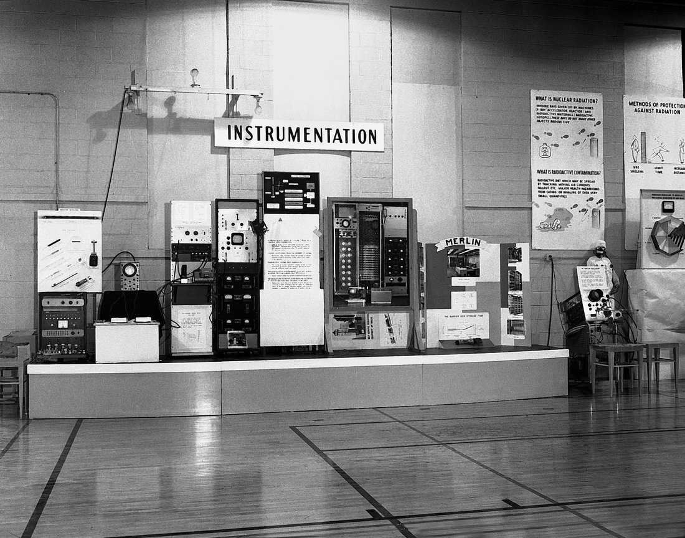
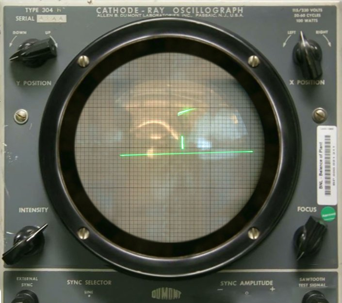
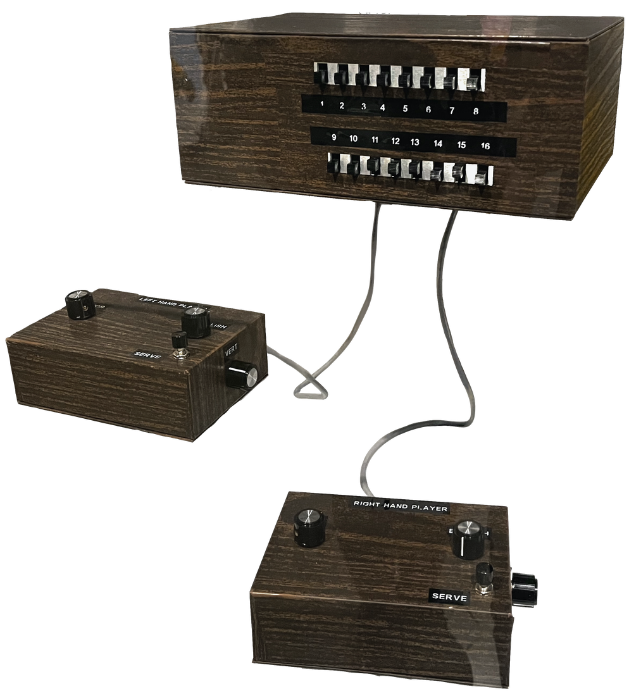
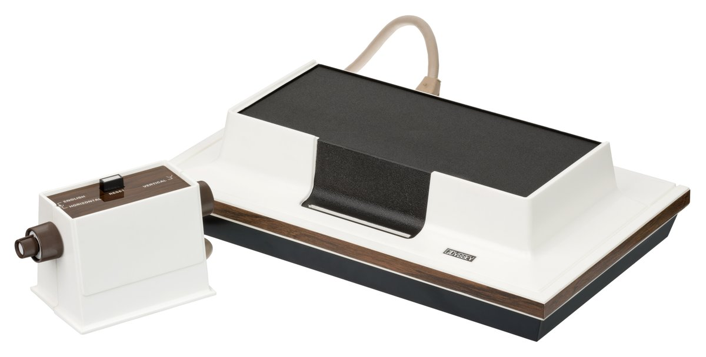
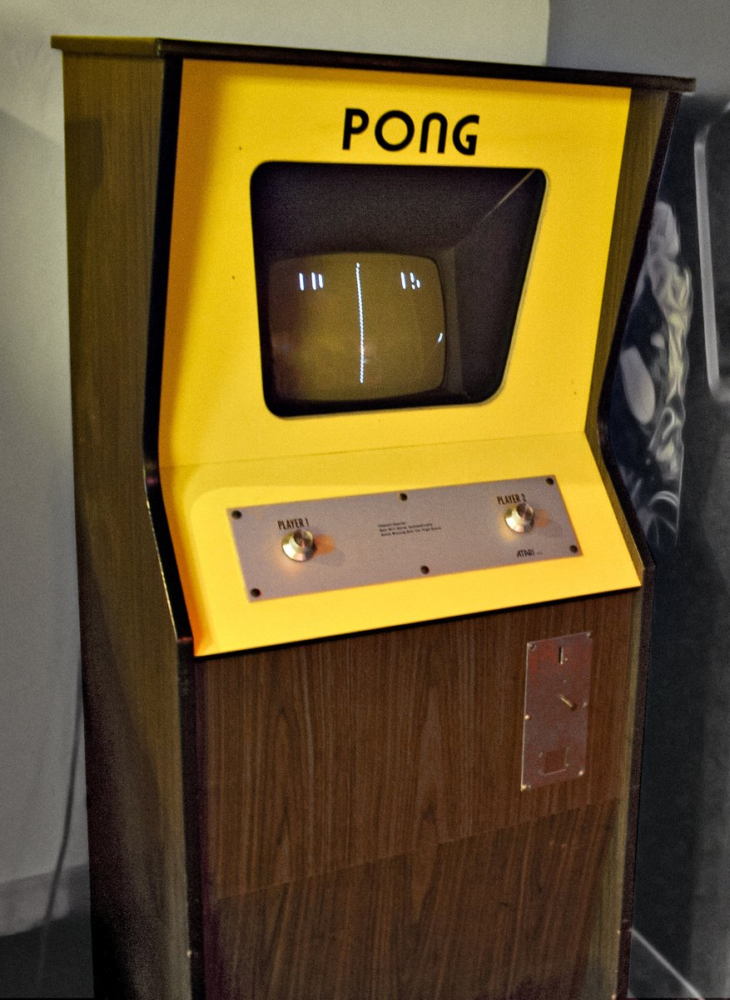
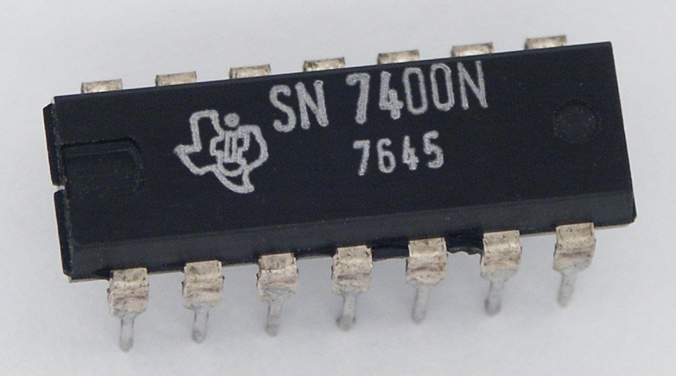
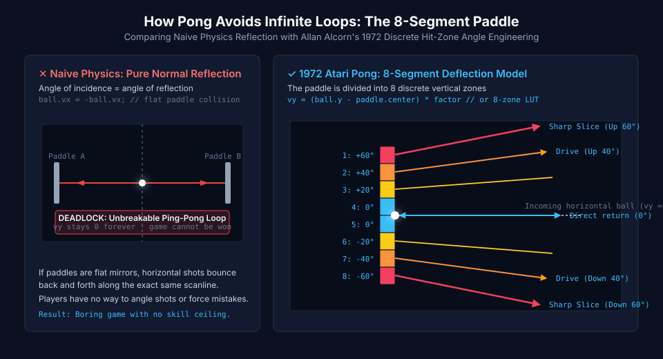
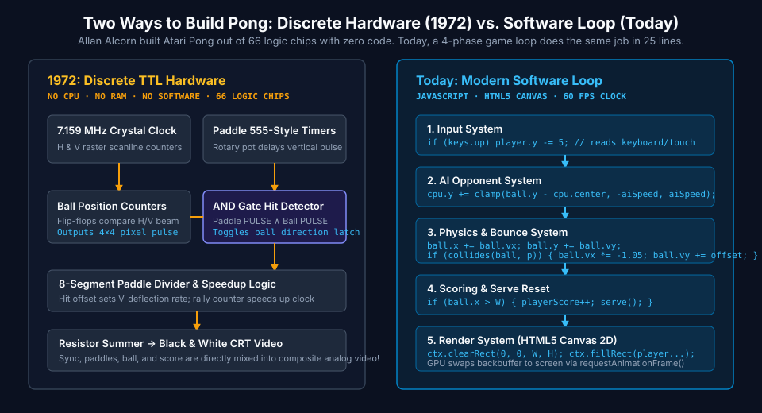

This is the exact Pong / Paddle Game archetype from What Makes a Game? — already built and running below, you vs. a simple computer opponent. Play it, then swap the pre-built ball, colors, and difficulty using the panel underneath. You can't break the loop itself; that part is locked. Once you've tuned a version you like, you'll build this same architecture two more times: with Scratch's blocks, then from real scratch in JavaScript.
🗺️ The Architecture
Every tiny-loop game starts as a concept, then gets broken into a core loop, a systems list, and a structure — before anyone touches sprites or colors. Here's the Pong / Paddle Game's architecture:
🌱ConceptBounce the ball past the CPU's paddle before it gets past yours.
→
🔁Core LoopBall moves → bounces off a wall or paddle → someone misses → score → repeat.
→
🧩SystemsPlayer input, CPU tracking, ball physics, scoring & reset.
→
🏁Win/LoseFirst to the score goal wins the match.
The four systems, in order of execution every frame:
Input system — reads the arrow keys (or mouse) and moves the player's paddle up/down.
AI system — moves the CPU's paddle toward the ball's y position, but capped at a limited speed so it's beatable.
Physics system — the ball moves every frame and reflects its direction off the top/bottom walls and either paddle.
Scoring system — when the ball passes a side completely, the other player scores and the ball resets to center.
🎮 Play & Customize
You're the left paddle. Move with ↑ / ↓ or W / S, point with the mouse, drag on a touchscreen, or use the touch buttons. Where the ball hits your paddle matters: the edges send it off at a steep angle. First to the score goal wins.
You 0 — 0 CPURally 0
Keys only work while the game has focus. Press P or Esc to pause.
Tune the Game (limited, on purpose)
Content settings change how it looks and apply instantly. Rule settings change how it plays, so the match restarts.
Notice what you can't change here: there's no field for "how bounce reflection works" or "how the CPU tracks the ball." That's the engine, the part every version of this game shares. You're tuning content and a few numbers, not rewriting architecture. That limit is on purpose.
What the sliders actually touch in the engine:Ball Speed sets the serve speed (1.5 + ballSpeed × 0.6); every paddle hit then adds 5%, capped at double. CPU Difficulty caps how many pixels per tick the CPU paddle may move toward the ball (clamp(dy, -aiSpeed, aiSpeed)). The CPU always knows exactly where the ball is. The cap is the only thing that makes it beatable.
🏛️ The Origin: From Oscilloscopes to Discrete Silicon (1958–1972)
Long before microprocessors, personal computers, or modern game engines existed, electrical engineers discovered how to turn electronic test equipment into competitive play. The game we now call Pong wasn't programmed in code—it began with analog vacuum tubes and was later built entirely out of discrete logic chips.
1958 · Upton, New York
William Higinbotham's Tennis for Two

Brookhaven Visitors' Day Exhibit (October 18, 1958) Nuclear physicist William Higinbotham designed the world's first interactive electronic video game to entertain visitors. Hundreds of people lined up to play on an analog Donner Model 30 operational amplifier computer. Click to enlarge.
Photo: Brookhaven National Laboratory · U.S. Federal Government (Public Domain)

DuMont 304-A Oscilloscope Display Rather than a raster TV screen, Tennis for Two drew a side-view court and bouncing dot directly with an electron beam. Ten operational amplifiers calculated gravity, velocity, and air drag in real time.
Photo: Brookhaven National Laboratory · U.S. Federal Government (Public Domain)
Higinbotham realized static science exhibits bored visitors. Using operational amplifiers from analog bomb-trajectory computers, he built two aluminum controllers with a rotary knob for trajectory angle and a push-button to hit the ball over a central cathode net.
1968–1972 · Nashua, NH
Ralph Baer's "Brown Box" & Magnavox Odyssey

Ralph Baer's 1968 "Brown Box" Prototype Preserved at the Smithsonian National Museum of American History, this working prototype proved ordinary household CRT televisions could be used for interactive multiplayer games. Click to enlarge.
Smithsonian Institution · Public domain dedication (CC0 1.0)

1972 Magnavox Odyssey Home Console The first commercial home video game system. Because it contained no microprocessor, inserting game cards physically rewired internal diode-transistor logic circuits to switch between games.
Photo: Evan-Amos · Public domain (The Vanamo Online Game Museum)
German-American engineer Ralph Baer envisioned games on standard living-room televisions. Licensed to Magnavox in 1972, the Odyssey had no CPU, RAM, or color output. Players attached translucent plastic color overlays to their TV screen with static electricity to view tennis courts, roulette tables, and haunted houses.
1972 · Sunnyvale, California
Allan Alcorn's Discrete TTL Pong (Atari)

1972 Atari Pong Arcade Cabinet Installed for testing at Andy Capp's Tavern in Sunnyvale, California, the machine jammed within days—not from a circuit failure, but because the coin hopper was overflowing with quarters. Click to enlarge.
Photo: Rob DiCaterino (Strong Museum of Play) · Creative Commons (CC BY 2.0)

7400-Series Transistor-Transistor Logic (TTL) Chip Allan Alcorn built Pong using 66 off-the-shelf 7400 TTL logic chips. There was no microprocessor, no RAM, and no code—every bounce, score digit, and sound pulse was created by hardware logic gates.
Photo: Stefan506 · Creative Commons (CC BY-SA 3.0)
When Nolan Bushnell and Ted Dabney founded Atari, they hired young engineer Allan Alcorn and assigned him a "warm-up exercise" to create a simple paddle game. Alcorn's ingenious circuit design required no expensive computer chips—revolutionizing coin-operated entertainment and launching the global video game industry.
📐 The Physics of Reflection: Alcorn's 8-Segment Deflection Model
If you build a paddle game using textbook physics ($r = d - 2(d \cdot n)n$), you encounter an immediate design catastrophe: the flat physics deadlock. If an incoming ball travels horizontally ($v_y = 0$) and strikes a vertical flat paddle, the reflection keeps $v_y = 0$. The ball bounces back and forth on the exact same scanline forever!
To turn Pong into a competitive game of skill, Allan Alcorn divided each paddle into 8 discrete vertical segments. Where the ball makes contact dictates both the outgoing bounce angle and the velocity boost.

Comparing Naive Normal Reflection vs. Alcorn's 8-Segment Zoning Pure physics produces an inescapable 0° horizontal loop. Alcorn's 8-segment model gives players direct angular control: center zones return shallow drives while outer tips launch steep 55° slices with acceleration. Click to enlarge.
ClassroomOS game engineering diagram · CC BY 4.0
Interactive Paddle Deflection & Angle Lab
Test how different paddle segments shape outgoing bounce vectors and rally speed
Segment HitZone 1: Top Tip
Offset from Center-28 px
Reflection Angle+55.0°
Velocity (vx, vy)(2.6, -3.8) · 1.08×
✓ 1972 ALCORN LOGIC: Sharp upward slice. Alcorn wired the outer edge to produce the maximum 55° climb angle, forcing the opponent to rush their paddle to the ceiling.
⚡ Under the Hood: Discrete TTL Hardware vs. The Modern Software Loop
Today, we think of game development as writing code that runs on a CPU. But in 1972, microprocessors like the Intel 8008 were too slow and expensive ($300+ each) for arcade games. Allan Alcorn achieved video game animation purely with discrete hardware timing.

Two Architectural Paradigms for the Same Core Loop On the left, Alcorn's 1972 discrete TTL hardware uses horizontal and vertical scanline counters to generate electron-beam timing. On the right, modern JavaScript runs a 60 FPS four-phase game loop. Click to enlarge.
ClassroomOS computer architecture diagram · CC BY 4.0
Raster Counters: Synchronous binary counters generate 15.75 kHz horizontal and 60 Hz vertical sync pulses to sweep the CRT electron gun.
Player Inputs: Rotary potentiometer dials charge timing capacitors, producing a vertical window pulse whenever the scanline reaches paddle height.
Ball Tracking: Dedicated flip-flops increment or decrement ball horizontal and vertical position registers every frame.
Collision Detection: A single Boolean AND gate detects when the paddle pulse and ball pulse are HIGH simultaneously, flipping the ball's horizontal direction latch.
Video Output: Resistors sum the sync, paddle, ball, and score pulses directly into analog composite video—zero software, zero memory buffers!
🔵 Today: Modern Software Game Loop
Clock: The browser's requestAnimationFrame() fires ~60 to 120 times per second synchronized with monitor refresh.
Phase 5 (Rasterization): Canvas 2D calls (fillRect()) submit draw batches to the GPU framebuffer.
👀 Peek at the Code
The game running above is this code. Nothing is hidden. It's split into two parts on purpose: a small config object that the panel edits, and a locked engine that reads it.
👆 This block updates live. Change anything in the panel and the matching value flashes here.
🔒 Engine: locked, shared by every version of this game
// runs exactly 60 times per second, whatever your screen's refresh ratefunctionupdate() {
// 1. INPUT: player paddle follows held keys (or the pointer)if (keys.up) player.y -= 5;
if (keys.down) player.y += 5;
// 2. AI: CPU paddle chases the ball, capped at aiSpeedconst dy = ball.y - cpu.centerY();
cpu.y += clamp(dy, -config.aiSpeed, config.aiSpeed);
// 3. PHYSICS: move, bounce off walls, reflect off paddles
ball.x += ball.vx; ball.y += ball.vy;
if (ball.y < 0 || ball.y > H) ball.vy *= -1;
if (collides(ball, player) || collides(ball, cpu)) {
ball.vx *= -1.05; // reflect + speed up 5%
ball.vy += (ball.y - paddle.centerY()) * 0.05; // edge hits = steeper angle
}
// 4. SCORING: ball fully passes a side → point, then re-serveif (ball.x < 0) { cpuScore++; serve(); }
if (ball.x > W) { playerScore++; serve(); }
}
This is what "architecture" means in practice: the config is the part of the design doc you filled out in Lesson 1 (goal, mechanic, feedback). The engine is the part no one writes twice. The same input, AI, physics, and scoring systems power every paddle game, from this one back to the 1972 arcade cabinet.
🧪 Remix Challenges
The panel can only turn the knobs the engine exposes. To change the rules, you have to change the engine. Each challenge below edits exactly one system. Try them in your own copy once you've built it in Lesson 2.
TweakShrinking paddlesPhysics system · one line
Make every point you score cost you paddle length, so a lead makes the game harder. What does that do to comebacks?
player.h = Math.max(20, 50 - playerScore * 6);
TwistTwo-player modeSwap the AI system for a second input
Delete system 2 entirely and give the right paddle its own keys. The physics and scoring systems don't change at all. That's the payoff of keeping systems separate.
// replaces the AI systemif (keys.p2up) cpu.y -= 5; // ↑if (keys.p2down) cpu.y += 5; // ↓ (player 1 keeps W / S)
TransformTurn it into BreakoutNew system: bricks
Remove the CPU paddle and fill the right third of the screen with a grid of bricks. When the ball hits a brick, remove the brick, reflect the ball, and add a point. You win when the grid is empty. Which of the four systems survive unchanged? (Hint: more than you'd think.)
🧠 Check Your Understanding
Test your grasp of Pong's history, collision physics, and game architecture:
Question 1: How did Allan Alcorn execute the game loop in the original 1972 Atari Pong arcade cabinet?
Question 2: What fatal gameplay flaw occurs if a paddle game uses pure flat-surface physics reflection (angle of incidence = angle of reflection)?
Question 3: In the original 1972 arcade hardware, how was a collision between the ball and paddle detected?
🛠️ Now Build It For Real
You've played a working Pong game and seen exactly how it's built. Next, build this same architecture yourself — twice, in two different tools.
🧩 Step 1 — Build It in Scratch
The "Build the Loop with Blocks" section above already shows the exact scripts — backdrop, sprites, variables, and all four scripts, block by block, in Scratch's own category colors. Open a Scratch tab side-by-side and copy each script exactly; the game should come to life the same way it does here.